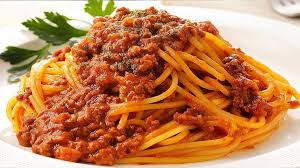

Spaghetti alla bolognese

Everyone loves pasta and its endless combinations, even if nothing beats the most classic pasta recipes. Spaghetti Bolognese is a classic Italian pasta recipe everyone likes. The Bolognese sauce is rich, thick and flavorful.
Ingredients
- Beef 300 g - (minced beef, coarsely ground and mixed)
- Carrots 50 g
- Yellow onions 50g
- Black pepper
- Pancetta 150g
- Extra virgin olive oil
- Tomato puree 300g
- Celery 50g
- Fine salt
- Red wine 100g
- Vegetable broth
Steps
- To prepare the Bolognese sauce, first take the pancetta. First cut into slices and then into strips, without being too precise. Then with a knife chop it well. In a pre-heated saucepan pour a drizzle of oil and add the pancetta.
- Shell it well and let it brown. In the meantime, take care of the vegetables. Peel the carrot and chop it finely. Then clean the celery and chop it too of the same size as your carrots.
- Finally, peel the onion and chop it. As soon asCover with the lid, but do not close completely 19. At this point the Bolognese sauce must cook for at least 2 hours. Check it every 20 minutes and add more broth as needed. After two hours, taste the sauce and season with salt and pepper 20. Stir again and your sauce will be ready 21. the pancetta is well browned, add the chopped vegetables.
- Stir and let simmer for 5-6 minutes. Add the ground beef.
- Stir and raise the heat. Let it brown without haste, the meat must seal well. Deglaze with red wine and mix again. As soon as the alcohol has evaporated, add the tomato puree.
- Stir and incorporate it. Add a couple of ladles of hot vegetable broth .
- Cover with the lid, but do not close completely. At this point the Bolognese sauce must cook for at least 2 hours. Check it every 20 minutes and add more broth as needed. After two hours, taste the sauce and season with salt and pepper. Stir again and your sauce will be ready.